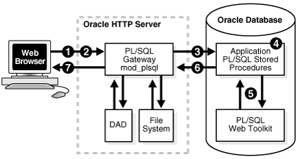

2 Oracle Multimedia Application Development
Oracle Multimedia enables you to develop either traditional client/server or two-tier applications, or multitier applications. Either method can then deploy Web applications to run on an application server tier, be tightly integrated with Oracle Database, and enable users to access the application from their desktop through a Web browser.
You can create production quality Oracle Multimedia applications for use in a production environment where users can interact with the application through either the standalone client interface or a Web browser. For Web applications, which are based on standards such as TCP/IP, HTTP, HTML, XML, and XHTML, this capability is facilitated by rapid developments in the underlying technology. As key software components become more tightly integrated, developers' tasks to design, create, and manage Web applications become faster, easier, and simpler to implement.
Several tools and languages can be used for application development with multimedia data. This chapter describes them in these sections:
See Also:
-
Oracle Multimedia PL/SQL Photo Album Sample Application for a description of the Oracle Multimedia Photo Album sample Web application, which uses PL/SQL scripts to demonstrate how to develop Web applications to upload and retrieve media data stored in a database
-
Oracle Multimedia Code Wizard Sample Application for the PL/SQL Gateway for a description of the Oracle Multimedia Code Wizard application, which lets you create PL/SQL stored procedures for the PL/SQL Gateway for uploading and retrieving media data stored in a database using Oracle Multimedia object types
2.1 Developing Multimedia Applications Using SQL Developer
Oracle SQL Developer is a tool that allows standalone graphical browsing and development of database schema objects.
Oracle SQL Developer supports the BLOB and BFILE data types. Developers who store their multimedia data in BLOBs and BFILEs can use Oracle SQL Developer for their multimedia applications.
Follow these steps to view an image that is stored in the database as a BLOB:
-
Find the table you created in the list of tables in SQL Developer.
-
Create a new row for importing images into your table. Then, import one or more images into the table.
-
Go to the Query Result area to view the properties of any imported image.
-
Select the BLOB in the column for the image you want to view. Then, double click the left mouse button.
A pencil icon displays to the right of the BLOB you selected.
-
Click the pencil icon to open the View Value window.
-
In the View As: field, check Image.
The image you selected is displayed on the Saved Image tab.
See Also:
-
Oracle SQL Developer User’s Guide for more information about using SQL Developer with BLOBs and BFILEs and with multimedia data
-
Oracle Multimedia on the Oracle Technology Network Web site for additional examples and other resources
2.2 Developing Multimedia Applications Using Application Express
Oracle Application Express is a rapid development tool for Web applications on Oracle Database.
Built-in features such as user interface themes, navigational controls, form handlers, and flexible reports, enable users of Oracle Application Express to accelerate the application development process.
Oracle Application Express provides support for BLOB and BFILE data types. Developers who store their multimedia data in BLOBs or BFILEs can use Oracle Application Express for rapid application development.
See Also:
Oracle Application Express App Builder User’s Guide for information about building multimedia applications with Oracle Application Express
2.3 Developing Multimedia Applications Using Java and JDBC
Using the Java database connectivity (JDBC) interface, Oracle Multimedia enables users to embed anonymous PL/SQL code blocks to quickly develop Java applications for use on any tier (client, application server, or database) to manipulate and modify audio, image, and video data, or heterogeneous media data stored in a database.
The following subsections describe how to use Java and JDBC to develop multimedia applications:
The examples in this section assume a table, with these two columns: a numeric identifier (id), and a binary large object (BLOB) to hold the image itself (image_blob).
create table image_blob_table ( id number primary key, image_blob BLOB)
lob(image_blob) store as securefile;See Also:
-
Oracle Database JDBC Developer's Guide for more information about using JDBC
-
Oracle Multimedia Reference for more information about the Oracle Multimedia PL/SQL packages and object interfaces
-
Oracle Multimedia DICOM Developer's Guide for more information about Oracle Multimedia DICOM features and enhancements
2.3.1 Media Upload in Java
This topic uses an example to show how to upload multimedia data in Java.
The following example shows how to import multimedia data from the file system into the database in a Java application.
public void writeImageToDatabase(int id, String fileName )
throws SQLException, IOException
{
//Define the PL/SQL block to insert the new row.
final String INSERT_BLOB = "DECLARE "
+ " src_id NUMBER; "
+ "BEGIN "
+ " src_id := ?;"
+ " DELETE FROM image_blob_table WHERE id=src_id; "
+ " INSERT INTO image_blob_table t (id, image_blob) "
+ " VALUES(src_id, empty_blob()) "
+ " RETURNING t.image_blob INTO ?; "
+ "END;";
try {
//Create the statement object.
final OracleCallableStatement pstmt =
(OracleCallableStatement)connection.prepareCall
(INSERT_BLOB);
//Binding the variables to the statement.
pstmt.setInt(1, id); //ID
pstmt.registerOutParameter(2, OracleTypes.BLOB);
pstmt.execute(); //Execute the PL/SQL statement.
//Get the BLOB locator from the table.
BLOB blob = pstmt.getBLOB(2);
File binaryFile = new File(fileName);
FileInputStream instream = new FileInputStream(binaryFile);
//Retrieve the ideal buffer size to use in writing to the BLOB.
int size = 1024*1024; // 1MB.
byte[] buffer = new byte[size];
int read = -1;
long position =1;
//Read the file to the byte array buffer, then write it to the BLOB.
while ((read = instream.read(buffer)) != -1)
{
blob.setBytes(position,buffer,0,read);
position+=read;
}
instream.close();
connection.commit();
} catch (FileNotFoundException e) {
throw new FileNotFoundException("File " + fileName +" not Found.");
} catch (IOException e) {
throw new IOException("Error while reading " + fileName);
}
}Call writeImageToDatabase( ) passing the row id and source file path:
//Write data from a local file into a BLOB in the database.
quickstart.writeImageToDatabase(1, "flowers.jpg");Note:
If the autoCommit flag on the connection is set to true, or is not set (the default is true), the following error is returned when you attempt to select a row with a BLOB column for update:
java.sql.SQLException: ORA-22990: LOB locators cannot span transactions
You can set the autocommit flag to false as follows:
conn.setautoCommit(false);2.3.2 Retrieval of Image Properties in Java
This topic uses an example to show how to retrieve the properties of image data in Java.
After the image data is imported from the file system into the table image_blob_table, the database does not know what the binary bytes in the BLOB column image_blob represent. The following example shows how to use the ORDSYS.ORD_IMAGE.getProperties( ) procedure of the Oracle Multimedia PL/SQL package to extract the image properties into the Java application.
public HashMap <String, Object> getProperties_example_j(int id )
throws SQLException
{
//Define the PL/SQL block to extract the properties.
final String getPropertiesStmt = "DECLARE "
+ " src BLOB; "
+ " img_mimeType VARCHAR2(32); "
+ " img_width INTEGER; "
+ " img_height INTEGER; "
+ " img_contentLength INTEGER; "
+ " img_fileFormat VARCHAR2(32); "
+ " img_contentFormat VARCHAR2(32); "
+ " img_compressionFormat VARCHAR2(32); "
+ "BEGIN "
+ " SELECT image_blob INTO src FROM image_blob_table"
+ " WHERE id=?; "
+ " ORDSYS.ORD_IMAGE.getProperties(src, "
+ " img_mimeType, "
+ " img_width, "
+ " img_height, "
+ " img_fileFormat, "
+ " img_compressionFormat, "
+ " img_contentFormat, "
+ " img_contentLength); "
+ " ? := img_mimeType; "
+ " ? := img_width; "
+ " ? := img_height; "
+ " ? := img_contentLength; "
+ " ? := img_fileFormat; "
+ " ? := img_contentFormat;"
+ " ? := img_compressionFormat; "
+ "END;";
//Create the statement object.
final OracleCallableStatement pstmt =
(OracleCallableStatement)connection.prepareCall(getPropertiesStmt);
//Binding the variables to the statement.
pstmt.setInt(1, id);
pstmt.registerOutParameter(2, OracleTypes.VARCHAR);
pstmt.registerOutParameter(3, OracleTypes.INTEGER);
pstmt.registerOutParameter(4, OracleTypes.INTEGER);
pstmt.registerOutParameter(5, OracleTypes.INTEGER);
pstmt.registerOutParameter(6, OracleTypes.VARCHAR);
pstmt.registerOutParameter(7, OracleTypes.VARCHAR);
pstmt.registerOutParameter(8, OracleTypes.VARCHAR);
//Execute the statement.
pstmt.execute();
//Create a HashMap object and populate it with the properties.
HashMap<String, Object> map = new HashMap<String, Object>();
map.put("mimeType", pstmt.getString(2));
map.put("width", pstmt.getInt(3) );
map.put("height", pstmt.getInt(4));
map.put("contentLength", pstmt.getInt(5));
map.put("fileFormat", pstmt.getString(6));
map.put("contentFormat", pstmt.getString(7));
map.put("compressionFormat", pstmt.getString(8));
return map;
}Call getProperties_example_j( ) passing the id, then iterate over the HashMap to print the properties.
System.out.println("Original image properties");
HashMap<String, Object> attributesMap= quickstart.getProperties_example_j(1);
//Iterate over the HashMap.
for (Map.Entry<String, Object> entry : attributesMap.entrySet()) {
System.out.println(entry.getKey() + " = " + entry.getValue());
}Note:
If the image data that is in the image_blob column is not a supported format for Oracle Multimedia (for example: PSD), the following error is returned.
Exception in thread "main" java.sql.SQLException: ORA-29400: data cartridge error2.3.3 Thumbnail Image Creation in Java
This topic uses an example to show how to generate a thumbnail image from an existing image in Java.
The Oracle Multimedia ORD_IMAGE PL/SQL package includes several image processing operations that you can invoke within the database. To generate a thumbnail image from an existing image, you can use the ORDSYS.ORD_IMAGE.thumbnail( ) procedure of the Oracle Multimedia PL/SQL package.
The following example shows how to create a thumbnail image from a source BLOB.
public void thumbnail_example_j(int src_id, int dst_id ) throws SQLException
{
//Define the PL/SQL block to create a thumbnail.
final String createThumbnailStmt = "DECLARE "
+ " src_blob BLOB;"
+ " dst_blob BLOB;"
+ " src_id NUMBER;"
+ " dst_id NUMBER;"
+ "BEGIN"
+ " src_id := ?;"
+ " dst_id := ?;"
+ " DELETE FROM image_blob_table WHERE id = dst_id;"
+ " INSERT INTO image_blob_table(id, image_blob) "
+ " VALUES (dst_id, empty_blob()) "
+ " RETURNING image_blob INTO dst_blob;"
+ " SELECT image_blob INTO src_blob FROM image_blob_table"
+ " WHERE id = src_id;"
+ " ORDSYS.ORD_IMAGE.thumbnail(src_blob,dst_blob);"
+ " UPDATE image_blob_table SET image_blob = dst_blob"
+ " WHERE id = dst_id; "
+ "END;";
final OracleCallableStatement pstmt =
(OracleCallableStatement)connection.prepareCall(createThumbnailStmt);
//Binding the variables to the statement.
pstmt.setInt(1, src_id);
pstmt.setInt(2, dst_id);
//Execute the statement.
pstmt.execute();
connection.commit();
}
Call thumbnail_example_j( ) passing the source and destination ids.
//Create a thumbnail.
quickstart.thumbnail_example_j(1,2);2.3.4 Handling Oracle Multimedia Exceptions in Java
This topic demonstrates proper error handling practices using code examples. These examples show how to handle some common Oracle Multimedia errors and other types of errors in Java programs.
Possible errors that can occur during run time should always be handled in your application. This practice enables the program to continue its operation even when it encounters a run-time error. This practice also enables users to know what went wrong during program operation. Proper error handling practices ensure that, whenever possible, you are always able to recover from an error while running an application. In addition, proper error handling provides you with the information you need so you always know what went wrong.
When handling exceptions, Java uses the try/catch block. For example, in Java, the exception can appear as follows:
try {
//<some program logic>)
}
catch (exceptionName a) {
//Exception logic
}
finally {
//Execute logic if try block is executed even if an exception is caught
}
When you design, code, and debug your application, you are aware of the places in your program where processing might stop due to a failure to anticipate an error. Those are the places in your program where you must add exception handling blocks to handle the potential errors.
The examples in this section describe exception handling using the try/catch block.
The following subsections provide additional details and examples of exception handling in Java:
See Also:
-
Oracle Database Java Developer's Guide for more information about handling Java exceptions
-
Oracle Database JDBC Developer's Guide for more information about handling Java exceptions using JDBC
2.3.4.1 Handling the Setting of Properties for Unknown Image Formats in Java
This topic shows how to handle exceptions when setting properties for unknown image formats in Java.
The following try/catch block shows how to handle exceptions on the setProperties( ) method:
try
{
img.setProperties();
return true;
}
catch (SQLException e)
{
return false;
}
If an exception is thrown, the setProperties( ) method returns false to indicate failure; otherwise it returns true.
2.3.4.2 Handling Image Processing for Unknown Image Formats in Java
This topic shows how to handle exceptions when processing images with unknown formats in Java.
If an application tries to process an image in cases when the image format is unknown, then when the application calls the processCopy( ) method, the application always fails. To work around this potential problem, the application uses the following try/catch block to catch any SQL exceptions:
try
{
image.processCopy( "maxScale=50,50", thumb );
}
catch ( SQLException e )
{
thumb.deleteContent();
thumb.setContentLength( 0 );
}
In this example, when the image format is unknown and a thumbnail image cannot be created, the application catches the SQL exception and calls the deleteContent( ) method to delete the content of the thumbnail image, and then calls the setContentLength( ) method to set its length to zero.
2.4 Developing Multimedia Applications Using PL/SQL
Using the PL/SQL application programming interface, Oracle Multimedia enables users to develop PL/SQL applications to manipulate audio, image, and video data, or heterogeneous media data stored in a database.
PL/SQL is a completely portable, high-performance transaction processing language that combines the data manipulation power of SQL with the data processing power of procedural languages.
This topic briefly describes how to manipulate Oracle Multimedia database objects with the PL/SQL application programming interface (API). The following Oracle Multimedia object types are available for storing media in the database:
-
ORDAudio
-
ORDDicom
-
ORDDoc
-
ORDImage
-
ORDVideo
Although this topic primarily discusses the Oracle Multimedia object types, the PL/SQL API can also be used to manipulate multimedia data stored directly in BLOBs or BFILEs. The following Oracle Multimedia PL/SQL packages are available for manipulating multimedia data in the database:
-
ORD_AUDIO
-
ORD_DICOM
-
ORD_DOC
-
ORD_IMAGE
-
ORD_VIDEO
The examples in this section use the Oracle Database Sample Schemas, which are available on GitHub.
The following subsections describe how to develop multimedia applications using PL/SQL:
See Also:
Oracle Multimedia Reference for details about the Oracle Multimedia PL/SQL packages and object types
2.4.1 Setting Up Directory Objects for Media Import and Export
This topic describes how to set up directory objects and grant privileges for reading and writing multimedia data to the file system using PL/SQL.
To access files with PL/SQL, you must create a directory object in the database that points to a directory that is accessible by the database server. For example, the following command creates the MEDIA_DIR directory in the sample schema:
CREATE DIRECTORY MEDIA_DIR AS
'c:\oracle\product\10.2.0\db_1\demo\schema\product_media';
To retrieve media data from the database to a file, you must grant the write permission on the specified directory to the appropriate user. For example:
GRANT WRITE ON DIRECTORY MEDIA_DIR TO SCOTT;
To upload media data from a file to the database, you must grant the read permission on the specified directory to the appropriate user. For example:
GRANT READ ON DIRECTORY MEDIA_DIR TO SCOTT;
2.4.2 Media Upload in PL/SQL
This topic uses an example to show how to upload multimedia data in PL/SQL.
Media upload means importing media data from the file system into the database tablespaces. The following series of steps is typical:
- Insert a new row into the table, creating new objects by using the object constructor of the Oracle Multimedia object type.
- Call the import method of the Oracle Multimedia object to bring the data from the file system into the database.
- Call the setProperties method of the Oracle Multimedia object to determine and populate the attributes of the object.
- Update the table so that the Oracle Multimedia object in the table contains the attribute values extracted in the previous step.
The PL/SQL code that implements these steps for inserting a new row in the PM.ONLINE_MEDIA table is shown in this example:
DECLARE
img ORDImage;
aud ORDAudio;
vid ORDVideo;
ctx RAW(64) := NULL;
BEGIN
-- Insert a new row into the pm.online_media table.
DELETE FROM pm.online_media WHERE product_id = 3003;
INSERT INTO pm.online_media
(product_id,
product_photo,
product_audio,
product_video)
VALUES (3003,
ORDSYS.ORDImage('FILE','MEDIA_DIR','laptop.jpg',0),
ORDSYS.ORDAudio('FILE','MEDIA_DIR','laptop.mpa',0),
ORDSYS.ORDVideo('FILE','MEDIA_DIR','laptop.rm',0))
RETURNING product_photo, product_audio, product_video
INTO img, aud, vid;
-- Bring the media into the database and populate the attributes.
-- ORDImage.import also calls ORDImage.setProperties.
img.import(ctx);
aud.import(ctx);
aud.setProperties(ctx);
vid.import(ctx);
vid.setProperties(ctx);
-- Update the table with the properties we have extracted.
UPDATE pm.online_media
SET product_photo = img,
product_audio = aud,
product_video = vid
WHERE product_id = 3003;
COMMIT;
END;
/2.4.3 Media Query in PL/SQL
This topic uses examples to show how to query multimedia data in PL/SQL.
You can include media attributes (for example: height, width, and MIME type) in standard SQL queries by using accessor methods (for example: getHeight, getWidth, and getMimeType). Example 2-1, Example 2-2, and Example 2-3 show how to use these accessor methods to query one or more object attributes for image, audio, and video objects, respectively.
Example 2-1 Image Query (Height, Width, and MimeType Attributes)
SELECT t.product_id id,
t.product_photo.getHeight() height,
t.product_photo.getWidth() width,
t.product_photo.getMimeType() mimetype
FROM pm.online_media t;Example 2-2 Audio Query (MimeType Attribute)
SELECT t.product_id id,
t.product_audio.getMimeType() mimetype
FROM pm.online_media t;Example 2-3 Video Query (MimeType Attribute)
SELECT t.product_id id,
t.product_video.getMimeType() mimetype
FROM pm.online_media t;2.4.4 Media Download in PL/SQL
This topic uses an example to show how to download multimedia data in PL/SQL.
To download media from the database into a file on the file system, call the export method of the Oracle Multimedia object. The following code example exports the image in the row with product_id 3117 to a file named 3117.jpg in the directory MEDIA_DIR. This code example highlights in bold the PL/SQL statements where this export operation takes place.
DECLARE
img ORDImage;
ctx RAW(64) := NULL;
BEGIN
SELECT product_photo
INTO img
FROM pm.online_media
WHERE product_id = 3117;
img.export(ctx, 'FILE', 'MEDIA_DIR', '3117.jpg');
END;
/2.4.5 Handling Oracle Multimedia Exceptions in PL/SQL
This topic demonstrates proper error handling practices using code examples. These examples show how to handle some common Oracle Multimedia errors and other types of errors in PL/SQL programs.
Possible errors that can occur during run time should always be handled in your application. This practice enables the program to continue its operation even when it encounters a run-time error. This practice also enables users to know what went wrong during program operation. Proper error handling practices ensure that, whenever possible, you are always able to recover from an error while running an application. In addition, proper error handling provides you with the information you need so you always know what went wrong.
When handling exceptions, PL/SQL uses exception blocks. For example, in PL/SQL, the exception can appear as follows:
BEGIN
<some program logic>
EXCEPTION
WHEN OTHERS THEN
<some exception logic>
END;
When you design, code, and debug your application, you are aware of the places in your program where processing might stop due to a failure to anticipate an error. Those are the places in your program where you must add exception handling blocks to handle the potential errors.
These examples are extracted from the PL/SQL sample applications that are described in Oracle Multimedia PL/SQL Photo Album Sample Application and Oracle Multimedia Code Wizard Sample Application for the PL/SQL Gateway.
The following subsections provide additional details and examples of exception handling in PL/SQL:
-
Handling the Setting of Properties for Unknown Image Formats in PL/SQL
-
Handling Image Processing for Unknown Image Formats in PL/SQL
See Also:
Oracle Database PL/SQL Language Reference for more information about handling PL/SQL exceptions
2.4.5.1 Handling the Setting of Properties for Unknown Image Formats in PL/SQL
This topic shows how to handle exceptions when setting properties for unknown image formats in PL/SQL.
If your program tries to set the properties of an uploaded image (it reads the image data to get the values of the object attributes so it can store them in the appropriate attribute fields) and the image format is not recognized, then the setProperties( ) method fails. To catch this exception and work around this potential problem, the application uses the following exception block:
BEGIN
new_image.setProperties();
EXCEPTION
WHEN OTHERS THEN
new_image.contentLength := upload_size;
new_image.mimeType := upload_mime_type;
END;
In this example, this exception handler sets the MIME type and length of the image based on the values from the upload table described at the beginning of the insert_new_photo procedure. The browser sets a MIME type header when the file is uploaded. The application reads this header to set the ORDImage field.
2.4.5.2 Handling Image Processing for Unknown Image Formats in PL/SQL
This topic shows how to handle exceptions when setting properties for unknown image formats in PL/SQL.
If your program tries to process an image in cases when the image format is unknown, the processCopy( ) method always fails. To work around this potential problem, the application uses the following exception block:
BEGIN
new_image.processCopy( 'maxScale=50,50', new_thumb);
EXCEPTION
WHEN OTHERS THEN
new_thumb.deleteContent();
new_thumb.contentLength := 0;
END;
In this example from the Oracle Multimedia PL/SQL Web Toolkit Photo Album application, when the image format is unknown and a thumbnail image cannot be created, this exception handler deletes the content of the thumbnail image and sets its length to zero.
2.5 Developing PL/SQL Web Applications
You can use the PL/SQL Gateway and PL/SQL Web Toolkit to develop Web applications in PL/SQL.
Note:
The use of the PL/SQL Gateway and PL/SQL Web Toolkit is suitable for applications that require tight control of the HTTP communication and HTML generation. For other applications, consider using Oracle Application Express, which provides more features and a convenient graphical interface to ease application development.
Developing Web applications using PL/SQL consists of developing one or more PL/SQL packages consisting of sets of stored procedures that interact with Web browsers through HTTP. Stored procedures can be executed in several ways:
-
From a hypertext link that calls a stored procedure when it is selected
-
By clicking Submit on an HTML form to denote the completion of a task such as filling out a form supplied on the HTML page
-
By passing parameters to a stored procedure based on user choices from a list
Information in the stored procedure, such as tagged HTML text, is displayed in the Web browser as a Web page. These dynamic Web pages are generated by the database and are based on the database contents and the input parameters passed in to the stored procedure. Using PL/SQL stored procedures is especially efficient and powerful for generating dynamic Web page content.
Use Oracle Multimedia when media data such as images, audio, video, or combinations of all three are to be uploaded into and retrieved from database tables, using the functions and procedures in the Oracle Multimedia PL/SQL packages or the Oracle Multimedia object types and their respective sets of methods.
Media upload procedures first perform a SQL INSERT operation to insert a row of data in the media table, which also initializes instances of the respective multimedia columns with an empty BLOB. Next, a SQL SELECT FOR UPDATE operation selects the multimedia columns for update. Finally a SQL UPDATE operation updates the multimedia columns. Oracle Multimedia procedures or methods are called to perform these tasks:
-
Initialize the multimedia columns with an empty BLOB.
-
Set attributes to indicate media data is stored internally in a BLOB, when using Oracle Multimedia object types.
-
Get values of the multimedia attributes and store them.
-
When exceptions occur, determine the length of the BLOB content and its MIME type.
Media retrieval operations involve these tasks:
-
Retrieving the multimedia data from the database
-
Checking the cache validity of the multimedia data based on its updated time in contrast to that of the HTTP header time
-
Determining where the media data is located: in the database, in a BFILE, or at a URL location; then, getting the media, and downloading it for display on an HTML page
Related Topics
See Also:
-
Oracle Application Express App Builder User’s Guide for information about using Oracle Application Express
-
Oracle Database Development Guide for more information about using PL/SQL Gateway and PL/SQL Web Toolkit
2.5.1 Using the PL/SQL Gateway and PL/SQL Web Toolkit
You can use the mod_plsql Gateway (a plug-in of Oracle HTTP Server) or the embedded version of the PLSQL Gateway that runs in the XML DB HTTP Listener in the database, to listen for browser requests, to execute stored PL/SQL procedures in the database, and to generate an HTML page containing data and code for the response returned to the Web browser for display.
Oracle HTTP Server serves mainly the static HTML files, images, and so on, that a Web application uses, and is usually located in the file system where Oracle HTTP Server is installed. Oracle HTTP Server contains modules or plug-ins that extend its functions. One of these modules supplied by Oracle is the mod_plsql module, also known as the PL/SQL Gateway. The PL/SQL Gateway serves data dynamically from the database to Web browsers by calling PL/SQL stored procedures. The PL/SQL Gateway receives requests from a Web browser that are mapped to PL/SQL stored procedure calls. PL/SQL stored procedures retrieve data from the database and generate an HTTP response containing the data and code from the PL/SQL Web Toolkit to display the generated Web page in a Web browser. The PL/SQL Web Toolkit contains a set of packages (including htp, htf, and owa ) that can be used in the stored procedures to get information about the request, construct HTML tags, and return header information to the client Web browser.
The following figure shows these main components: Oracle HTTP Server, the Web browser, and the database.
Figure 2-1 Components of a PL/SQL Web Application
Description of "Figure 2-1 Components of a PL/SQL Web Application"
The numbers in the preceding figure represent steps that describe how a client Web browser request is turned into a Web page response from the execution of the PL/SQL procedure:
- A client Web browser sends a PL/SQL server page or servlet request to Oracle HTTP Server.
- Oracle HTTP Server routes the request to the PL/SQL Gateway (mod_plsql).
- The PL/SQL Gateway forwards the request to the database using configuration information stored in the database access descriptor (DAD) and connects to the database.
- The PL/SQL Gateway prepares the call parameters and invokes the PL/SQL package and the PL/SQL stored procedure in the application.
- The PL/SQL procedure generates an HTML page using data from the database and special packages in the PL/SQL Web Toolkit accessed from the database. The PL/SQL Web Toolkit contains a set of packages, including
htp,htf, andowa, which are used in the stored procedures to get information about the request, construct HTML tags, and return header information to the client Web browser as the response returned to the PL/SQL Gateway. - The PL/SQL Gateway sends the response to Oracle HTTP Server.
- Oracle HTTP Server sends the response to the client Web browser for display as a formatted Web page.
Example 2-4 URL Format to Invoke mod_plsql in a Web Browser
protocol://hostname[:port number]/DAD-name/[[!][schema name.] [package name.]procedure_name[?query_string]]
Example 2-5 URL Format to Invoke mod_plsql for the Photo Album Application
protocol://<hostname>[:<port-number>]/DAD-name/]procedure_name
Usually, the returned formatted Web page has one or more additional links, and each link, when selected, sends another request to the database through the PL/SQL Gateway to execute one or more stored procedures. The generated response displays data on the client Web page usually with additional links, which, when selected, execute more stored procedures that return the generated response for display as yet another formatted Web page, and so on.
Web application developers who use the PL/SQL Gateway create a PL/SQL package specification and body that describe procedures and functions that comprise the application. The package specification defines the procedures and functions used by the application, and the package body is the implementation of each procedure and function. All packages are compiled and stored in the database to perform specific operations for accessing data in the database and formatting HTML output for Web page presentation.
Oracle HTTP Server maps a URL entered in a browser to a specific PL/SQL procedure stored in the database. It does this by storing specific configuration information in a DAD for each stored procedure. Thus, each DAD contains the database connection information that the Web server requires to translate the URL entered into a database connection to call the stored procedure.
Oracle HTTP Server listens for a request, routes the request to the PL/SQL Gateway, which forwards it to the database. Configuration information values stored in a DAD determine the database alias to use, the connection string to use for remote access, the procedure to use for uploading or downloading documents, and the user name and password information to enable access to the database. From the Web browser, the user specifies the URL that invokes the PL/SQL Gateway. The URL has a defined format for specifying all the required and optional parameters, including the location of the DAD and the name of the PL/SQL stored procedure to run, as shown in Example 2-4.
To use the Oracle Multimedia Photo Album sample application and the PL/SQL Web Toolkit, the URL can be simplified to the format shown in Example 2-5.
When the URL is entered in the Web browser, it includes the protocol (HTTP or HTTPS), the name of the hosting Web server, and the port number on which it is listening to handle requests. Next, the specified virtual path includes /pls/<DAD-name> to indicate that the Web server is configured to invoke mod_plsql, and the location of the DAD on the Web server.
In Example 2-4, the last five parameters include the exclamation point (!) character, schema name, package name, procedure name, and query string. From the syntax, the exclamation point, schema name, package name, and query string parameters are optional; only the procedure name is required.
The exclamation point indicates that flexible parameter passing is being used. The schema name, if omitted, is resolved based on the user name. The package name, if omitted, means the procedure is standalone. The query string parameters are for the stored procedure and follow a special format. Of these five parameters, the procedure name must be specified in both the DAD and the URL. The other four parameters are specified in either the DAD or the URL, or not at all, depending on the application.
The URL displays the home page for the specified DAD. When the URL is entered in the address field of the Web browser page, it invokes either the specified DAD location only, or the specified DAD location along with the procedure name, or the specified DAD location along with the schema.package.procedure name. The response is returned as an HTML page. The HTML page contains the requested data and any other specified code for display in the client's Web browser. The Code Wizard demonstrates how this operation works. For example, to invoke the Code Wizard administration URL, enter the following URL:
http://<hostname>:<port-number>/pls/ordcwadmin
The virtual path includes pls to indicate that the Web server is configured to invoke mod_plsql, followed by the name of the DAD used for the Code Wizard administrator, ordcwadmin.
When the HTML page is displayed, it resolves to the following URL for the Code Wizard administrator:
http://<hostname>:<port-number>/pls/ordcwadmin/ORDCWPKG.menu
ORDCWPKG.menu represents the package.procedure name, which is specified as the default home page in the ordcwadmin DAD.
When the PL/SQL Gateway is invoked, it uses the stateless model and does not permit a transaction to span across multiple HTTP requests. In this stateless model, applications typically can create a session to maintain state by using one of these techniques: HTTP cookies, a hidden HTML field as an HTML form element of the HTML Form package, or storage of vital information in database tables for query.